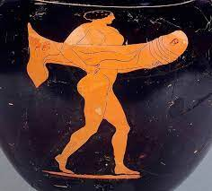
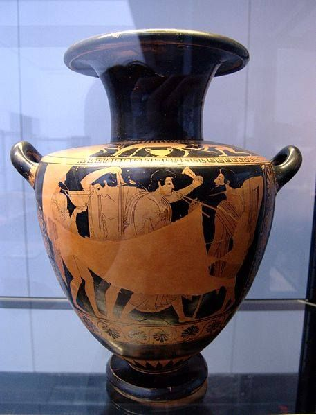

Tre giorni prima dell'inizio delle Dionisie, si svolgeva la cerimonia del Proagone all'interno dell'Odeon (struttura fatta costruire da Pericle nel 440 a.C.). Durante questo momento, i tragediografi in gara agli agoni teatrali, che si sarebbero svolti dall'11 di Elafebolione, riassumevano al pubblico le trame delle tragedie che avrebbero rappresentato accompagnati dagli attori che non indossavano maschere o costumi di scena ma solo una corona.
Demostene... propone un decreto... (67) ... che i pritani convochino un’assemblea durante l’ottavo giorno della prima decade di Elafebolione, giorno sacro, in cui sono celebrati il sacrificio ad Ascepio e il proagone: fatto inaudito a memoria d’uomo... (68) ... A questo punto Demostene fa approvare un altro decreto, secondo il quale è possibile deliberare non solo della pace ma anche a proposito di una vostra alleanza, senza attendere il ritorno dei vostri ambasciatori, ma immediatamente dopo le Dionisie urbane, nei giorni diciotto e diciannove del mese.
Pochi giorni prima delle Grandi Dionisie si svolgeva nell’edificio chiamato Odeion una gara di poeti tragici e l’anticipazione della trama dei drammi di prossima rappresentazione a teatro; si chiamava per questo proagone. Gli attori vi si presentavano senza costume nè maschera
Una gara di poeti tragici e l’anticipazione della trama dei drammi di prossima rappresentazione a teatro.
Non avrei affatto memoria, Agatone, ... se dopo averti visto salire con spirito ardito e nobile sulla piattaforma con gli attori, e fissare lo sguardo su un così vasto pubblico mentre ti accingevi a illustrare i tuoi drammi, e certo non eri affatto intimidito...
Il poeta, accompagnato dai propri attori, si recava su una piattaforma eretta per l’occasione e, successivamente, presentava le trame delle proprie opere che avrebbe messo in scena durante la competizione teatrale. Episodio ricordato dagli antichi per l’atmosfera di commozione fu, nel 406 a.C., dopo la notizia della morte di Euripide, l’ascesa sulla piattaforma di Sofocle, oramai anziano, vestito in lutto e accompagnato dagli attori privi della tradizionale corona della cerimonia. Bisogna infine affermare che la cerimonia del proagone non faceva parte della festa vera e propria, che invece iniziava con la processione che si svolgeva durante la mattina del 10 di Elafebolione. Come non faceva parte della festa vera e propria la cerimonia del proagone, anche una rievocazione in forma drammatica dell’originario avvento di Dioniso Eleutere non rientrava probabilmente nel periodo festivo, ma ne era una anticipazione. La statua del dio veniva condotta sulla strada per Eluetere e posta su di un altare all’interno del tempio sacro nell’area dell’Accademia. Ad essa venivano fatti sacrifici ed inni, ed infine veniva trasportata al teatro accompagnata dalla processione che dava inizio al periodo festivo.
Plutarco, nei propri scritti, parlava del dispendioso evento delle processioni dionisiache che si svolgevano ad Atene nel periodo in cui era vissuto (III secolo d.C.) facendone un paragone con la semplicità di quelle rustiche, ma non menzionando la grandezza di quelle del V e IV secolo a.C. nella polis. Rilevante è un elemento primitivo del culto di Dioniso menzionato da Plutarco: il fatto che vi venissero fatti sfilare dei falli in onore del dio. La testimonianza diretta della presenza di falli durante la festività fu l’episodio per cui, intorno all’anno 446-445 a.C., venne deciso che la nuova colonia di Brea dovesse inviare annualmente un phallos alle Dionisie urbane. Molto probabilmente anche altre colonie adottarono la medesima donazione nei confronti di Atene. La processione con la presenza di falli, caratteristica delle Dionisie cittadine, avrebbe simbolicamente rievocato l’atto che fu utilizzato nell’antichità per placare il dio dopo il suo originario arrivo ad Atene.
Ulteriore testimonianza riguardante la processione è la notizia, di cui siamo a conoscenza, riguardante la persona di Demetrio Falereo. Egli venne onorato con un poema in sua lode quando, in qualità di arconte, guidò la processione. Inoltre, ben documentato è, dopo esser stato condotto al teatro da parte degli efebi , il sacrificio di un toro. Ad oggi il percorso del corteo è ignoto. Si può ipotizzare che la processione venisse animata da canti satirici che avevano come scopo la eliminazione del malocchio. Possibile è la presenza in altri momenti della giornata di cori e danze davanti ad altari. Particolarmente importante sembra l’altare dei Dodici dei, presente nell’Agorà.
Ritengo che le processioni sarebbero inoltre graditissime agli dèi e agli spettatori se compissero il giro di quanti templi e statue sorgono nell'Agorà, cominciando dalle Erme e muovendo in cerchio attorno all'Agorà e ai templi, onorando gli dèi, come avviene per i cori delle Dionisie, che con la loro danza rendono omaggio ai Dodici Dei, e anche alle altre divinità.
un dettaglio del cratere del pittore di Pan V secolo a.C., Altes Museum, Berlino.
La processione, che si svolgeva durante la mattina della prima giornata di festa, terminava il proprio percorso all’interno del recinto sacro del teatro di Dioniso. All’interno di esso, prima degli spettacoli teatrali, avveniva l’evento della presentazione e sfilata, durante il quale venivano presentati dagli araldi gli orfani dei caduti in battaglia che avevano raggiunto l’età efebica. Essi sfilavano con addosso la panoplia e successivamente andavano a prendere posto nella proedria . Venivano poi incoronati i cittadini che avevano prestato alla polis particolari servigi. Infine, avveniva l’esposizione dei tributi offerti da parte delle città alleate. Essi avevano lo scopo di rendere manifesta l’egemonia economica, militare e politica di Atene in Attica. Eschine ci offre una descrizione della manifestazione che si svolgeva all’interno del teatro.
Eschine, contro Ctesifonte 154, traduzione di Andrea Blasina.
Quale greco, quale uomo educato nel rispetto di alti sentimenti non si rammaricherebbe, ricordando solo un fatto, per tacere del resto: che un tempo, in questo stesso giorno che vede l’inizio delle rappresentazioni tragiche, quando la città era meglio governata e migliori reggenti la servivano, l’araldo giungeva a presentare gli orfani i cui padri erano caduti in guerra. Annunciava per quei giovani in armatura il proclama più alto, la migliore esortazione al valore:”Il popolo ha allevato fino alla giovinezza questi fanciulli, i cui padri mostrarono nobiltà e valore morendo in guerra;il popolo li invia ora, rivestiti di una completa armatura, a cercare ognuno la propria fortuna nel mondo, e offre loro i posti d’onore a teatro”. Un tempo risuonava questo annuncio; ora non più.
Nel pomeriggio della prima giornata delle Grandi Dionisie (come attestato anche nella sopra citata fonte "Eschine, contro Ctesifonte 154"), iniziavano le competizioni.
Prima fra tutte era la gara dei cori ditirambici istituita nel 508 a.C. Durante questo agone gareggiavano, in due categorie differenti, dieci cori composti da uomini e dici da ragazzi.
Ognuno era rappresentativo della tribù attica (phylai) di appartenienza. Essi cantavano ditirambi, antichi canti in onore di Dioniso. Il canto corale, di metro e ritmo vario vedeva la fusione della poesia, musica e danza. Tutte e tre indispensabili. Ogni coro era composto da cinquanta elementi per un totale, durante la competizione, di venti performance cantate e danzate da mille persone. Tali rappresentazioni permettevano di tramandare oralmente la memoria dei canti, miti e storie della città.
Quello che sappiamo sui cori ditirambici lo dobbiamo principalmente a due importanti fonti:
la serie di iscrizioni raccolte nell'ultima edizione del "Corpus" e le dichiarazioni degli studiosi alessandrini presenti negli "argomenti" premessi a molti drammi nelle nostre edizioni. Tali testimonianze sono attendibili e ci permettono di conoscere le registrazioni ufficiali scritte dagli arconti di Atene. Gli studiosi sono certi che, una registrazione ufficiale sia stata redatta fin dal momento in cui venne organizzata la festa (già dal V secolo a.C.), ma è poco probabile che le epigrafi in nostro possesso trascrivano in maniera corretta e completa tale registrazione, anche se ne riportano alla luce a grandi linee il contenuto che doveva possedere. Nella seconda metà del IV secolo a.C. è probabile che Aristotele si occupasse delle registrazioni ufficiali di manifestazioni liriche e drammatiche (dal 334 a.C. circa
fino alla sua morte). L’iscrizione più studiata e che riporta alla luce fondamentali
avvenimenti sono i Fasti (I.G II 2318). Di essi non ci sono pervenute le prime due
o tre colonne. Non si conosce l’anno di inizio delle registrazioni, ma è possibile che
la prima data della iscrizione potesse essere quella del 501 a.C., mentre la prima
iscrizione superstite appartiene all’anno del 472 a.C.
Per ogni anno venivano riportati secondo lo stesso ordine:
-Il nome dell'arconte organizzatore
-La tribù vincitrice del coro dei ragazzi e il suo corego
-La tribù vincitrice del coro degli adulti e il suo corego
-Il nome del corego e del poeta vincitori degli agoni comici
-Il nome del corego e del poeta vincitori degli agoni tragici
I frammenti superstiti in nostro possesso terminano con le iscrizioni dell’anno 328
a.C., ma è possibile che la registrazione degli organizzatori e vincitori continuasse ad
essere prodotta su tale supporto per almeno altri venti anni.
Fonti gara del ditirambo
La prima giornata delle Dionisie terminava in un clima di festa, aveva luogo il Komos. Un corteo di giovani e adulti che continuava a gioire per la città facendo grandi bevute e canti.
Di questa tipologia di usanza non si possiedono informazioni di qualche rilievo. A uso esplicativo inserisco di seguito l'immagine di una idra attica a figure rosse databile al 500 a.C. proveniente da Vulci (non raffigurante un Kommos svoltosi ad Atene). Le scene rappresentate su di essa gli studiosi ritengono siano da attribuire ad un komos. Vi è un personaggio che tiene in mano uno skyphos (una particolare tipologia di coppa greca), un altro canta accompagnato dalla musica di due ragazzi che suonano un crotales e un aulos.
Idra attica a figure rosse, 500 a.C. circa da Vulci, Monaco, Staatliche antikensammlungen. Scena di Komos: un uomo tiene uno skyphos, altri due stanno suonando (crotales e aulos) ed un ultimo canta.
La mattina del secondo giorno la città si radunava nel teatro di Dioniso; iniziavano gli agoni teatrali con la rappresentazione di una tetralogia tragica per ogni
giornata (una per ogni autore). Le rappresentazioni drammatiche occupavano interamente la seconda, terza e quarta giornata delle Grandi Dionisie. Gli agoni tragici
furono istituiti tra il 534 e il 530 a.C.
Nel V secolo a.C., periodo di maggiore splendore che vedeva tragediografi quali Eschilo, Sofocle ed Euripide portare in scena i
propri drammi, concorrevano alla gara tre tragediografi, ognuno con una tetralogia (tre tragedie e un dramma satiresco). La comunità attendeva da tutto l’anno
di vedere uomini in costume dietro a maschere fisse in una smorfia di dolore, che
mettevano in scena racconti noti con trame incestuose, ricche di sangue e dolore. Il
ruolo degli agoni drammatici ad Atene era molto importante, lo testimonia il forte
interesse di uomini politici ad inserirsi in questo ambiente per ottenere o aumentare
il consenso popolare nei propri confronti. Tra le personalità di rilievo che adottarono tale strategia risulta Temistocle, il quale, protagonista della vittoria dei greci
contro i persiani nel 480-479 a.C., assunse per le Dionisie del 476 a.C. la coregia di
una tragedia di Frinico, la quale vinse. Per celebrare la vittoria si fece comporre
una epigrafe nella quale sottolineava il suo ruolo di corego nella messa in scena della ragedia. Pericle, per ottenere consenso dalla popolazione, intraprese un programma di edilizia pubblica, nel quale riservò un posto privilegiato agli edifici teatrali,
ristrutturando il teatro di Dioniso e costruendo un nuovo edificio: l’Odeon. In fine
Nicia, uomo politico noto per aver promosso la pace che mise fine alla prima fase
della guerra del Peloponneso, ottenne fiducia da parte del popolo facendo da corego.
Fonte rilevante per quanto riguarda gli agoni tragici sono i "Fasti" (I.G. II 2318).
Tali iscrizioni mancano di due o tre colonne iniziali, non si conosce l'anno di inizio ma è probabile che la prima data della iscrizione potesse essere il 501 a.C., mentre la prima iscrizione superstite è del 472 a.C. Per ogni anno venivano riportati secondo lo stesso ordine:
-Il nome dell'arconte
-La tribù vincitrice del coro dei ragazzi e il suo corego
-La tribù vincitrice del coro degli adulti e il suo corego
-Il nome del corego e del poeta vincitori degli agoni comici
-Il nome del corego e del poeta vincitori degli agoni tragici
I frammenti superstiti terminano nell'anno 328 a.C. ma è possibile che l'iscrizione procedesse per altri venti anni. Vi è inoltre la presenza di iscrizioni che ci permettono di affermare che, per tutto il V secolo a.C. (ad eccezione di alcuni anni), erano tre i poeti che partecipavano all'agone delle tragedie.
Ognuno dei partecipanti doveva portare in scena una tetralogia, cioè tre tragedie ed un dramma satiresco.
Questa esigenza di portare per ognuno un numero prestabilito di opere era dovuto probabilmente per assicurare una competizione equilibrata, oltre che per esigenze di programma.
Ulteriore documentazione a supporto degli agoni tragici sono i resti di monumenti eretti da coreghi vincitori.
Fonti agoni tragici
Nell’ultima giornata delle Dionisie venivano svolti gli agoni comici, consistevano nella rappresentazione delle commedie. Nel V secolo a.C. si documenta la presenza in gara di cinque commediografi, ognuno con una commedia. La comicità prendeva il sopravvento sulla paura e il dolore rappresentati nelle giornate precedenti. Durante la commedia attica antica, il commediografo dava sfogo alla aggressività repressa del cittadino comune contro le personalità più influenti della polis, e grazie alle risate nei loro confronti si andava a creare un clima di temporaneo sollievo. La popolazione trionfava insieme all’eroe comico su ogni avversità come ad esempio i problemi esistenziali, la guerra e le preoccupazioni materiali. La prima vittoria menzionata nel frammento superstite, denominato Fasti I.G. II 2318, è quella di Magnete nel 472 a.C. Le iscrizioni, riconosciute sotto il nome di Fasti, sono fondamentali e ci informano dell’eccezione riguardante le competizioni, che avvenne durante il periodo della guerra del Peloponneso, quando agli agoni comici parteciparono solo tre tragediografi (invece dei consueti cinque). Ulteriore testimonianza è data dalla commedia di Aristofane, Uccelli.
Se qualcuno di voi spettatori avesse le ali, quando fosse affamato o annoiato dai cori delle tragedie potrebbe volarsene a casa per mangiare, e poi, riempita la pancia, a volo tornare da noi”
In questi versi mostra che, nel 414 a.C., le commedie venivano recitate durante il pomeriggio delle stesse giornate in cui si tenevano le tragedie perch`e in quell’anno le commedie presentate agli agoni erano solo tre, non cinque. Possiamo dedurre che i tre giorni dedicati alle rappresentazioni teatrali erano occupati ognuno da: tre tragedie, un dramma satiresco e una commedia. I frammenti della registrazione epigrafica dei Fasti, riguardanti le gare delle commedie, sono interrotti all’anno 143 a.C. Gli studiosi sono concordi nell’affermare che, nuove e vecchie commedie furono messe in scena ad Atene anche successivamente, almeno fino al I secolo d.C.
A conclusione dell’ultima giornata delle Dionisie cittadine avveniva la cerimonia di premiazione delle competizioni teatrali. A decretare i vincitori erano i giudici, un gruppo di 10 persone sorteggiate ognuno da una delle tribù. Essi, dopo aver assistito agli spettacoli, dovevano scrivere la propria classifica su di una tavoletta che veniva inserita in una urna. In un secondo momento, vi sarebbe stato il sorteggio di solamente cinque delle dieci liste prodotte dai giudici. La classifica finale veniva stilata sulla base delle tavolette estratte dall’arconte. La vittoria dei tragediografi comportava un grande prestigio, mentre un cattivo piazzamento avrebbe significato subire le beffe degli avversari e perdere la stima di molti concittadini. Durante periodi di grande partecipazione di commediografi alla competizione comica, chi aveva ottenuto un insuccesso nell’edizione precedente, veniva escluso dagli agoni dionisiaci dell’anno successivo. La testimonianza che ci permette di ricostruire la procedura, per garantire una corretta selezione dei giudici e dei loro compiti, è principalmente quella di Plutarco. Plutarco ci descrive come nel 468 a.C. l’arconte di quell’anno mise da parte la procedura regolare di scelta dei giudici, mostrandoci alcuni aspetti di quella che solitamente veniva svolta.
Di Cimone si ricorda anche il famoso giudizio agli agoni tragici. Sofocle, che allora era un giovane, si presentava per la prima volta al concorso; dal momento che vi erano malumori e dissenso tra il pubblico, l’arconte Apsefione non scelse per sorteggio i giudici, ma quando Cimone e gli altri strateghi giunsero al teatro, dopo che ebbero offerto al dio le libagioni prescritte non li fece uscire: furono costretti a prestare giuramento e a fare da giudici. Erano infatti dieci, ciascuno proveniente da una tribù diversa. Ebbe così vita un agone singolarmente accanito, anche a causa della singolare dignità dei giudici: la vittoria fu di Sofocle, etc.
Ulteriori testimonianze sul metodo di selezione sono contenute nei passi degli oratori Isocrate e Lisia.
Chi è fra voi che ignori il misfatto di Pitodoro, soprannominato ”il bottegaio”, quello che parla e agisce esclusivamente nell’interesse di Pasione, lui che l’anno scorso scassin`o le urne e da esse tolse i nomi dei giudici inseriti dalla Boul`e? E dunque, se costui per cos`ı poco rischiando la vita ebbe l’ardire di aprire le urne che avevano il contrassegno dei pritani e il sigillo dei coreghi, ed erano collocate nell’acropoli sotto la custodia dei tesorie, perchè dovremmo meravigliarci se etc.
Avrei voluto che il sorteggio non lo avesse escluso dal numero dei giudici definitivi delle Dionisie, [...]. Aveva assegnato la vittoria al coro della mia tribù: questo fu il suo voto sulla tavoletta, che però non venne estratta[...].
Non di rado il verdetto della giuria poteva essere influenzato dal pubblico che attraverso fischi, applausi ed urla rendeva manifesta la propria preferenza ma anche dagli stessi poeti. Caso emblematico è quello di Aristofane, il quale nelle commedie Nuvole e Uccelli tenta di corrompere i membri della giuria.
Vogliamo parlare dei vantaggi che otterranno i giudici se favoriranno, secondo giustizia, questo coro. Innanzitutto: se a primavera vorrete dissodare i campi, la prima pioggia sarà per voi, e solo dopo pioveremo sugli altri. E, inoltre, proteggeremo le viti cariche di grappoli: che non abbiano a partire nè siccità nè troppa pioggia. Ma se un mortale ci offende, si guardi dai guai che noi, le dee, gli procureremo: dal podere non raccoglierà nè vino nè altro. Quando infatti germoglieranno ulivi e vigne, li spaccheremo: colpendoli con chicchi di grandine di questa grandezza. E se lo vedremo fabbricare mattoni, ci metteremo a piovere, e gli romperemo le tegole del tetto con chicchi tondi di grandine. E se si sposerà, lui o un suo parente o un amico, pioveremo per tutta la notte: e forse preferirà essere in Egitto piuttosto che aver dato un giudizio sbagliato.
(Il capo del secondo semicoro afferma:) Ai giudici vogliamo dire una parola a proposito della vittoria: se voteranno per noi, daremo a tutti loro una grande quantità di beni, sicchè otterranno doni molto più preziosi di quelli di Alessandro. In primo luogo (e questo è il più grande desiderio che nutre ogni giudice), le civette del Laurio non vi abbandoneranno mai, ma abiteranno nelle vostre case, e faranno il nido nelle vostre borse, e, covandole, faranno venir fuori le... monetine. E poi, per di più, abiterete come nei templi, dal momento che faremo le coperture delle vostre case a forma di aquila; e se, avuta in sorte una piccola carica pubblica, vorrete farci su qualche illecito guadagno, vi metteremo in mano un piccolo, rapace sparviero; e se vi troverete a pranzare da qualche parte, vi manderemo dei gozzi di uccello. Se invece non voterete per noi, fabbricatevi delle lunette di metallo, come quelle che hanno le statue, da portare con voi, perchè chiunque di voi non l’avrà con se, la pagherà cara, specie quando indosserete un mantello bianco: sarete ricoperti di merda da tutti gli uccelli.
Concluse le Dionisie rurali giungeva il momento di trarre le conclusioni della festa mediante una assemblea che doveva analizzare l’organizzazione e i torti che erano stati subiti durante la festività.
L’assemblea si riuniva il giorno successivo le Pandie. La prima funzione che doveva svolgere era l’esame dell’organizzazione e dell’operato dei pubblici ufficiali, responsabili della festa conclusa. Dopo questa prima valutazione si passava alla presa in esame delle querele che erano state presentate dai cittadini che durante la festa avevano subito dei danni fisici o morali da parte di altre persone. Le querele presentate e la loro convalidazione da parte dell’assemblea non fungevano da atto giuridico ma se esse venivano riconosciute come valide l’offeso, in un secondo momento davanti al giudice avrebbe avuto molto più potere. Tra gli esempi di querele Demostene ne ricorda uno in particolare riguardante l’accusa da parte di un cittadino che aveva utilizzato la violenza per impedire ad un uomo di rubargli il posto a sedere a teatro.
E fatto obbligo ai pritani di convocare un’assemblea nel santuario di Dioniso nel giorno successivo alle Pandie. Vi si discutano in prima istanza le cose sacre: successivamente si presentino le querele concernenti fatti avvenuti nel corso della processione o degli agoni delle Dionisie, a meno che non siano già state risarcite.
Questa, o ateniesi, è la legge che regola le querele: essa prevede, come avete potuto udire, che si svolga un’assemblea nel santuario di Dioniso dopo le Pandie. A questa, dopo che i proedri abbiano esaminato l’amministrazione dell’arconte, spetta il giudizio su malefatte e illegalità commesse nell’ambito della festa. E una legge ottima e utile, come dimostra il fatto stesso.